В этом руководстве рассказывается об использовании компонента Projector Light и его наиболее часто используемых настройках. Компонент Projector Light излучает свет в определенном направлении. Радиус его луча, яркость, цвет, анимация яркости и цвета, а также проецируемые текстуры — это лишь некоторые из многих свойств, которыми можно управлять. Общие случаи использования включают прожекторы, фонарики, автомобильные фары, архитектурные светильники от настольных ламп до потолочных светильников и многое другое. В то время как компонент Point Light можно сравнить с голой лампочкой, Projector Lights похож на реальный свет. светильники - лампочки, вмонтированные в какой-либо светильник, обеспечивающий полный контроль над всеми их визуальными характеристиками.
Прежде чем начать
Прежде чем приступить к изучению этого руководства, мы рекомендуем вам прочитать документацию по Компоненты сущностей (из версии движка 5.6). Это даст вам гораздо лучшее понимание концепций, лежащих в основе Entity-компонентов CRYENGINE. Здесь вы также найдете справочное руководство по всем свойствам, доступным для каждого компонента.
Для создания новых сущностей можно использовать разные методы. Для получения дополнительной информации см. Компоненты сущности документация.
Создание света
Прежде чем приступить к созданию света, используйте Environment Editor, чтобы изменить время дня на ночь, чтобы солнце не мешало освещению. Чтобы увидеть эти примеры, мы установили время суток на 00:15. Интенсивность солнца равна 8000, а цвет установлен на #5ed7fb, более насыщенный зелено-синий, чем по умолчанию. На этих скриншотах мы расположили луну так, чтобы она появлялась сверху справа. Вы также заметите, что лунный свет отбрасывает тени, которые тянутся влево от объектов Designer, которые мы разместили на сцене.
Пока ты можешь добавить легкий компонент для существующий объект (например, видимая сетка, представляющая лампочку или светильник), их также можно добавлять непосредственно на уровень как компоненты, независимые от какого-либо объекта. В этом случае сам компонент света невидим для игрока; виден только его эффект:
- Откройте Создать объект инструмент
Нажмите на Компоненты и откройте Свет папка, чтобы показать Проектор Свет.
Вы можете либо перетащить компонент на уровень, или double-нажмите компонент, в который помещается мышь Создать объект режим. Преимущество этого метода заключается в том, что вы можете использовать колесо прокрутки для вращать наведите объект вокруг оси Z (вертикальной) и направьте свет, прежде чем щелкнуть мышью, чтобы разместить его на уровне. Возможно, вы захотите настроить текущую скорость камеры в меню «Камера» окна просмотра перспективы, чтобы повлиять на то, насколько быстро колесо прокрутки вращает объект.
Если вы не щелкнули существующий объект, чтобы поместить на него новый компонент освещения, поворот компонента освещения будет изменен. щелкнуть к местности, захватывая большую часть света под местностью. Используйте Переместить штуковина, чтобы переместить ее вверх в воздух.
Настройка свойств основного света
Преобразование свойств
Обратите внимание: когда вы нажимаете на компонент «Прожекторный свет», набор желтых линий показывает важное свойство: радиус луча в градусах, которые вы найдете на панели «Свойства» в разделе Трансформировать -> Угол. По умолчанию используется угол 45°, но вы можете использовать любое значение от 0 (в этом случае нет света убежит!) и 180°.
Следующее, что вам обычно захочется изменить, — это яркость света. В типичных случаях использования это лучше всего достигается с помощью Цвет -> Диффузный множитель собственность. Значение по умолчанию: 1; желаемое значение будет зависеть от расстояния между вашим световым компонентом и объектами и/или местностью, которую вы хотите осветить.
Как только вы сделаете свет достаточно ярким, чтобы увидеть его эффект, попробуйте использовать Переместить и Поворот вещицы, чтобы прицелиться точнее.
Когда вы пытаетесь точно направить свет, попробуйте временно уменьшить Угол до очень малой величины (3-5°) и увеличивая Диффузный множитель чтобы украсить его. (Используя круглую или квадратную текстуру с четкими краями в Параметры проектора -> Проецируемая текстура свойство сделает его луч еще более четким.) Используйте Переместить и Поворот вещицы, чтобы прицелиться. Только не забудьте восстановить Угол и Диффузный множитель к желаемым значениям, когда вы закончите.
Яркостью зеркальных бликов можно управлять независимо (Цвет -> Множитель зеркального блеска). Например, спроецируйте свет на сферу, чтобы увидеть зеркальное отражение источника света на шаре. Установить Зеркальный множитель чтобы 0 и изюминка исчезает полностью. Увеличьте его, и выделение станет ярче и увеличится. Однако мы рекомендуем оставить этот параметр по умолчанию ценность 1 производить физически точный зеркальные отражения и использование Diffuse Multiplier для управления яркостью.
Активный свойство просто включает и выключает ваш световой компонент; это особенно полезно для управления с помощью визуальных сценариев или кода во время игры в ответ на состояния игры, выключатели света, триггеры и т. д.
Цвет -> Цвет это просто цвет света.
По умолчанию легкие компоненты нет отбрасывать тени; вы можете включить их, установив Тени -> Минимальная графика теней установка на что-то кроме Нет. Помните, что это не настройка качества, а определяет, в каких пределах Спецификация тени системы заслоняющий объект будет отбрасывать тень.
Диапазон — максимальное расстояние (в метрах), на которое может проникнуть свет. Чтобы имитировать свет в реальном мире, яркость света уменьшается. экспоненциально с расстоянием от источника света (где Яркость = 1/Расстояние2). Однако есть еще два фактора, которые повлияют на это:
- Падение только начинается снаружи радиус «лампочки» virtual, который задается Параметры -> Размер лампы ослабления параметр. Опять же, это расстояние в метрах, которое представляет собой радиус из «лампочки». В пределах этого радиуса интенсивность света равна 100%. Радиус по умолчанию составляет 0,1 м, что подходит для большинства «лампочек» virtual.
- Чтобы избежать проблемы, заключающейся в том, что свет в реальном мире никогда не достигает нуля (и чтобы избежать траты ресурсов на вычисление бесконечно малых, невидимых изменений яркости), CRYENGINE свет падает в соответствии с общепринятой формулой: пока они достигают 80% их дальности действия. Начиная с 80% они начинают отваливаться линейно пока их не заставят ноль яркость при 100% диапазона.
На скриншотах ниже показано, как рассчитывается спад и на него влияет Диапазон и Размер лампы затухания настройки в различных случаях использования. Все экземпляры настроены следующим образом:
- Числовые сетки указывают, на каком расстоянии они находятся от источника света в левом нижнем углу.
- Полюса точно 1м друг от друга, а красные столбы отмечают каждую 10 м
- Тени были отключен на компоненте Projector Light, чтобы свет мог проникать и беспрепятственно освещать все числовые сетки.
- Цвет света был немного изменен. оранжевый чтобы отличить его от сине-зеленого лунного света, идущего с противоположной стороны.
В этом первом примере Диапазон Свет проектора установлен точно на 100 ми Диффузный множитель есть 3000. Вы можете ясно видеть экспоненциально убывающую яркость на расстоянии до 80 метров. В этот момент спад переключается с экспоненциального на линейный, что вы можете увидеть по внезапному резкому падению яркости между 80 и 90 м, а затем снова до 0% яркости на 100 м. (Мы использовали немного сине-зеленого лунного света из-за цифр, чтобы вы могли их видеть, и красный свет, чтобы отметить точку 100 м.)
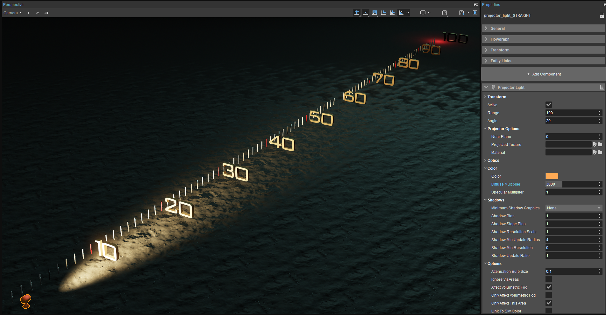
В этом втором примере Размер лампы затухания было изменено на 100 м, что означает, что свет 100% его яркости от 0 до 80% значения Range.. (Поскольку изменение размера лампы ослабления эффективно увеличивает полную яркость света в радиусе 80 м, мы также уменьшили Диффузный множитель просто 5 для компенсации дополнительной яркости.) Поскольку Диапазон все еще 100 м, это означает, что экспоненциальная часть спада полностью устранен. То есть, есть без изменения яркости от 0 до 80 м. Между 80 и 100 м яркость уменьшается линейно, как это было в предыдущем примере, что вы снова можете видеть по резкому изменению: 90 м вдвое менее яркие при 0-80, а 100 снова полностью темные (т. е. интенсивность оранжевого света упала до 0%). См. Затухание и спад для получения дополнительной информации.
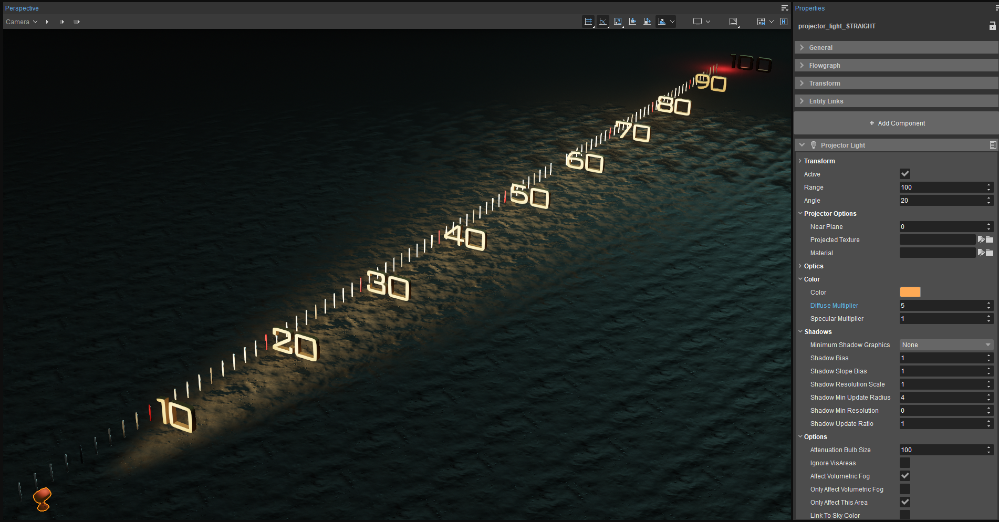
Использование угловых и проецируемых текстур
В этом примере свет использует угол 45°. Угол проецировать на несколько объектов и местность.
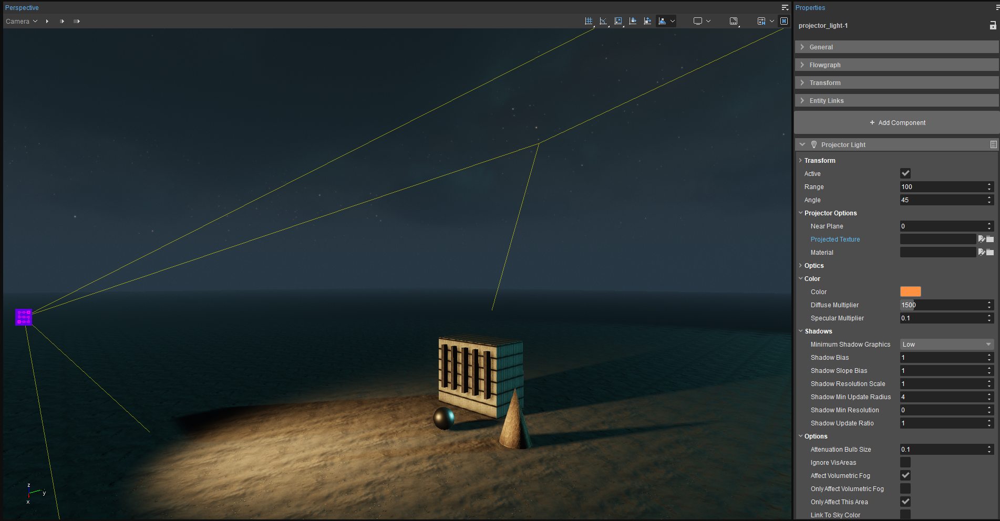
Сравните это с примером ниже, где угол по-прежнему равен 45°, но прямоугольная текстура в оттенках серого его ширина составляет 25 %. long был добавлен в Параметры проектора -> Проецируемая текстура свойство придавать балке прямоугольную форму.
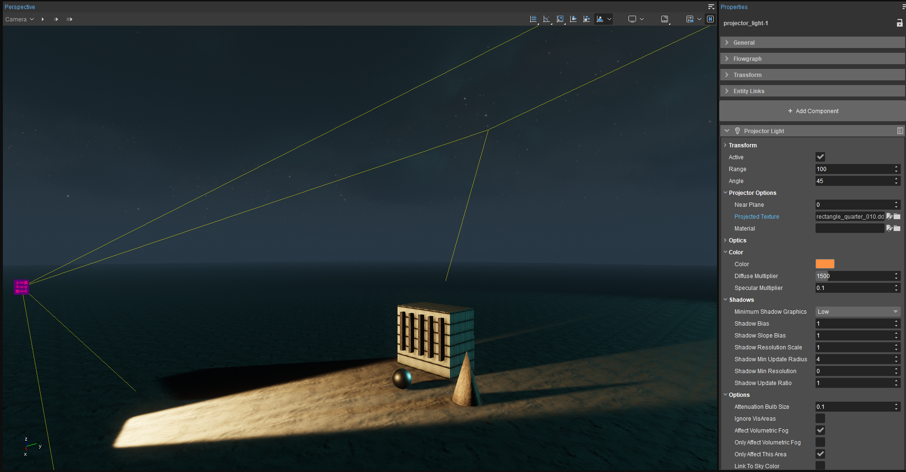
Вы можете использовать текстуры в оттенках серого в Параметры проектора -> Проецируемая текстура свойство для создания узоров и формирования краев легкого компонента. Здесь угол установлен на 5° освещать только мяч.
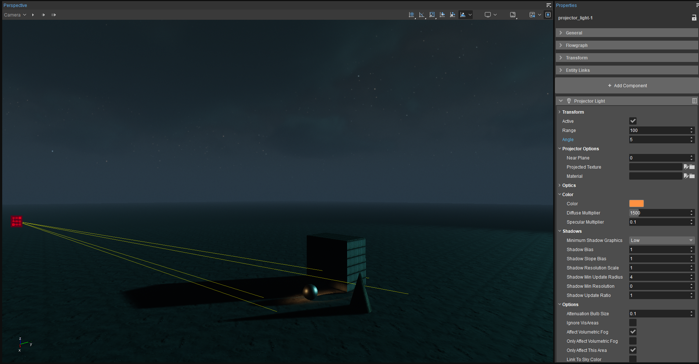
С добавлением круглой текстуры с четкими краями. Параметры проектора -> Проецируемая текстура (GameSdk\textures\lights\generic\spot_005.dds), это 5° Угол Настройка гораздо более эффективна в качестве прожектора, как показано ниже.
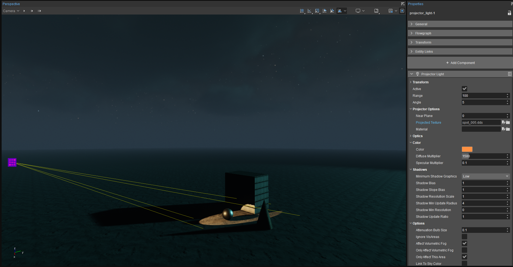
В этом примере угол установлен на 24° и добавлена текстура, имитирующая жалюзи. (Вы можете найти текстуру жалюзи в файле GameSDK. текстуры папку и другие текстуры, использованные выше в текстуры\свет\универсальные.)
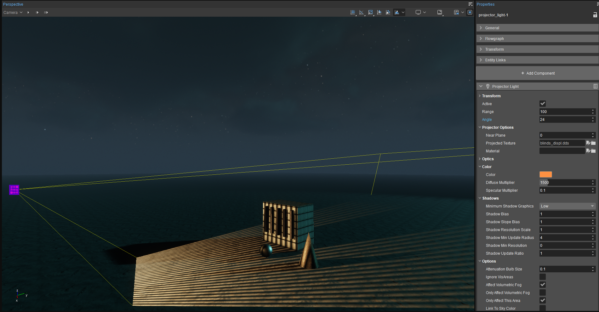
Создание собственных текстур проекции
Если вы хотите создать свои собственные проецируемые текстуры, мы рекомендуем сделать их размером 512x512 пикселей, 16-битной градацией серого и экспортировать их в файлы CryTif с помощью LightProjector предустановка. (Убедитесь, что у вас установлен плагин Photoshop CryTif, запустив Tools\CryToolsInstaller.exe.) Хотя вы можете использовать текстуры с более высоким разрешением 1024x1024 пикселей, в большинстве случаев в этом нет необходимости; обычно это только увеличивает использование памяти без какой-либо видимой выгоды.
В Photoshop создайте 16-битное изображение в оттенках серого размером 512x512 пикселей. Вы можете начать с черного фона, чтобы блокировать весь свет, с белого фона, чтобы свет был виден повсюду, или со средне-серого фона, чтобы показать 50% интенсивности света, а затем выборочно затемнять и осветлять области.
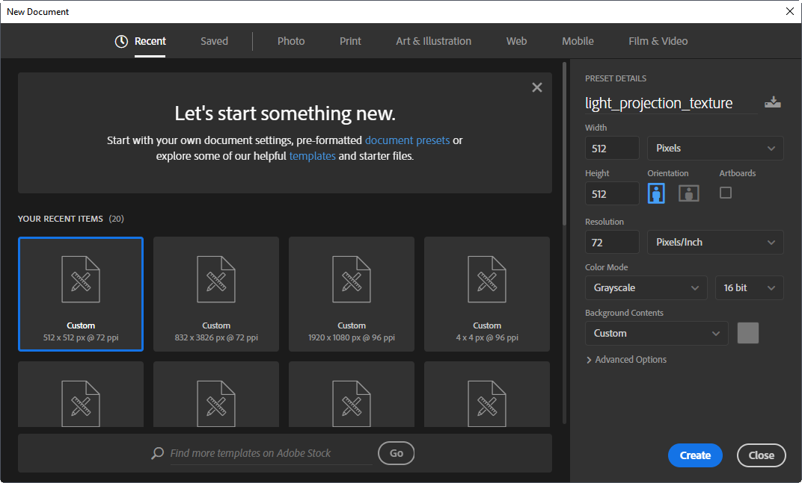
Чтобы добавить текстуру, рисуйте любой черной кистью там, где вы хотите создать тени, или белой кистью там, где вы хотите увеличить интенсивность света. Черный полностью заблокирует свет; белый покажет полную интенсивность света. Вы также можете попробовать фильтры Photoshop для рендеринга текстур. Здесь мы использовали Фильтры > Рендеринг > Облака фильтр, затем 8 пикселей Размытие по Гауссу.
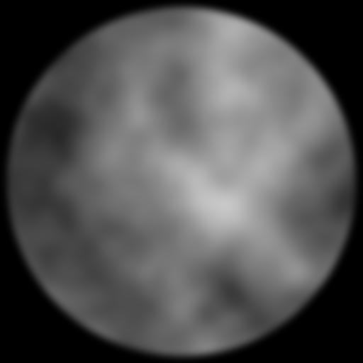
Вы также можете перетащить или скопировать и вставить любое изображение в документ Photoshop для создания проецируемых 2D-изображений, текстур, логотипов и т. д. В этом примере мы использовали логотип CRYENGINE как белую область внутри текстуры со всеми пикселями вокруг него черными.
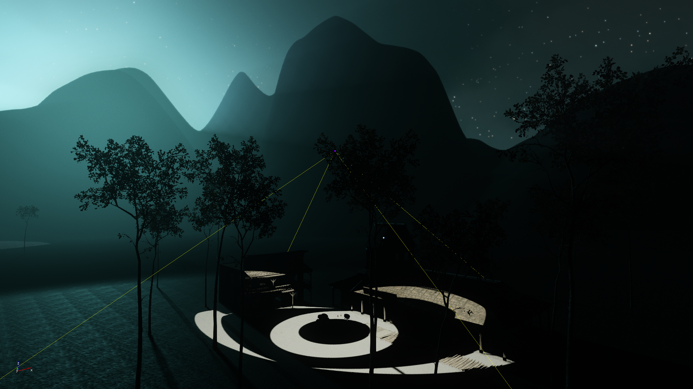
Убедитесь, что вы перешли к черному цвету до того, как достигнете краев текстуры, иначе вы увидите пиксельный край при проецировании его со световым компонентом, как показано ниже. Для этого выбрать желаемую форму с помощью любого инструмента выделения (выделение, лассо, перо и т. д.), но держитесь подальше от краев холста.
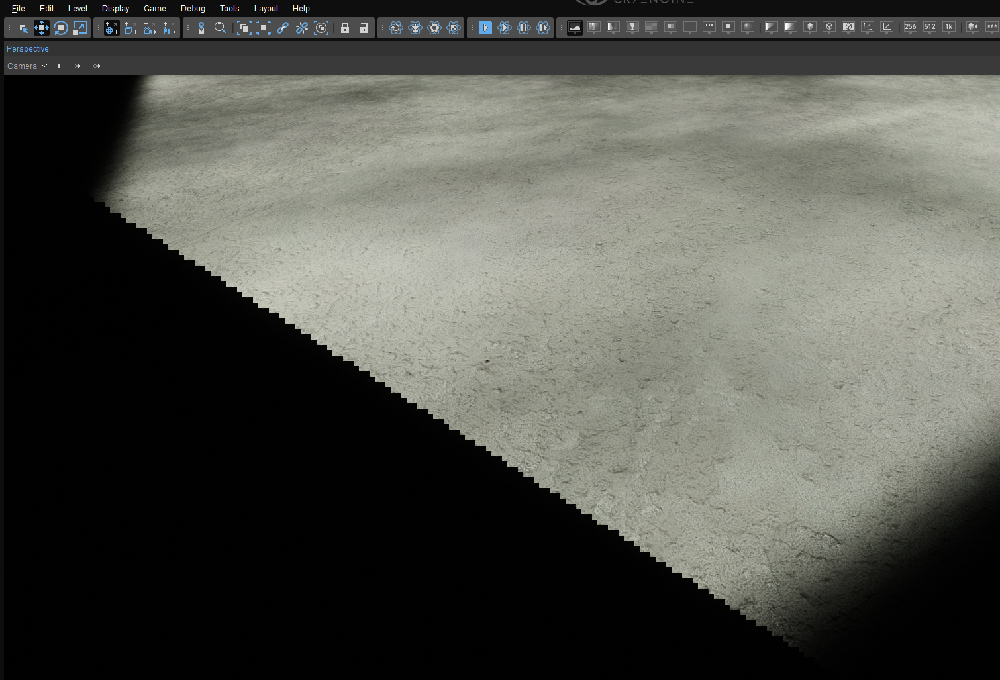
Выберите Выбрать → Изменить → Перо... из меню Photoshop. Введите желаемое количество пикселей, на котором вы хотите, чтобы край света исчез.
Инвертировать ваш выбор (Ctrl-Shift-I).
Заполнить выбранная область с черный.
Экспорт как CryTif используя LightProjector шейдер.
Будьте осторожны при размещении источников света с проецируемыми текстурами слишком далеко от поверхностей, так как со временем станет очевидным относительно низкое разрешение текстур. В примере ниже используется круглая текстура размером 1024 пикселя, расположенная необычно далеко от ландшафта.
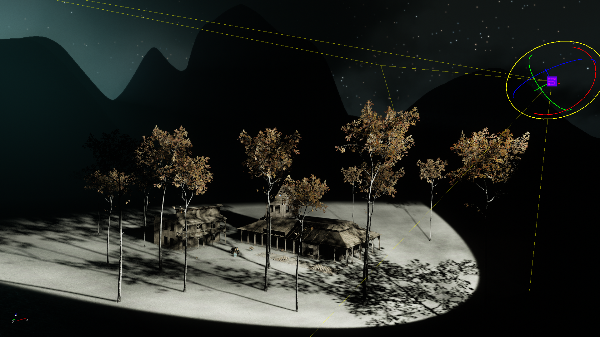
Использование объемов обрезки для ограничения области, на которую влияет свет
Недвижимость Опции → Влиять только на эту область можно проверить, если добавить Громкость клипа (Создать объект → Область → Объем клипа) на уровень и используйте фонарь Ссылки на объекты → Инструмент выбора чтобы выбрать Громкость клипа. (Не забудьте закрыть режим выбора в верхней части окна просмотра перспективы после того, как вы нажали на объем клипа.) Это заставляет свет только появиться внутри Clip Volume — очень полезен в таких случаях, как обеспечение того, чтобы свет не выходил за пределы внутреннего пространства и т. д., как показано ниже. Вы даже можете использовать сложный фигуры после того, как вы нарисовали простое поле громкости клипа, щелкнув значок Редактировать кнопку и с помощью инструмента «Дизайнер» изменить модель. Модель Clip Volume может быть сложной, но она должна быть водонепроницаемой (т. е. не содержать только дырок).
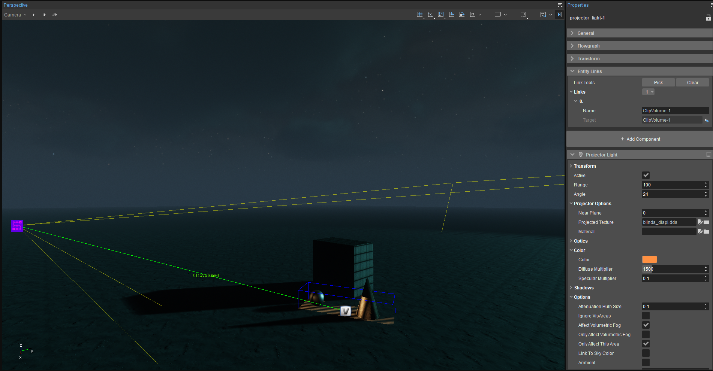
Интенсивность и цвет света также могут быть изменены. анимированный присвоив значение (кроме 0) к Анимации → Стиль собственность. Скорость воспроизведения активной анимации задается через Анимации → Скорость. Существует множество предустановленных анимаций, включая включение/выключение мигания и включение/выключение затухания с различной скоростью, как в обычном, так и в нерегулярном ритме, а также циклическое переключение цветов. Программисты могут просматривать, изменять или дополнять эти анимации в шейдере света (engineroot\Engine\Shaders\HWScripts\CryFX\Light.cfx). Непрограммисты, которые хотят создавать собственную интенсивность света и цветовую анимацию, могут просто использовать Trackview.
Настройки глобального освещения (SVOGI)
Если вы хотите, чтобы компонент Projector Light был включен в расчеты SVOGI, установите для него значение Статический (для недвижимых объектов) или Динамический (для расчетов отскока в реальном времени, что полезно для объектов, которые будут двигаться). Вы также можете выбрать Скрыть, если GI активен для автоматического отключения света при активации GI.
Вариант использования: виртуальный лунный свет
Бывают случаи, когда вам нужно распространить свет одинаковой яркости на большее расстояние. Вы можете добиться этого, используя большой Размер лампы затухания ценность. В приведенном ниже примере мы создали virtual лунный свет с помощью компонента Projector Light. Яркость Солнца установлено на 200 чтобы текстура луны оставалась видимой, сохраняя при этом немного свечения вокруг луны. Компонент Projector Light расположен достаточно далеко от центра уровня и на ~430 м выше него. Угол установлен на 180°, чтобы он освещал всю карту высот. Поскольку в реальной жизни Солнце (и его свет, отражающийся от Луны) находится так далеко от Земли, что его яркость фактически распределяется по всей освещенной поверхности Земли, мы установили Размер лампы затухания чтобы 5000м и его Диапазон чтобы 8000м поэтому его яркость полностью одинакова по всей карте высот.
По общему признанию, это крайний пример, иллюстрирующий, как работает свойство «Размер лампы затухания». Если вы внимательно посмотрите на местность, которую освещает свет проектора, особенно на ее краях, вы поймете почему: вы заметите очень пиксельную текстуру. Прожекторные светильники всегда используйте текстуру, даже если вы не указали ее вручную в разделе Параметры проектора -> Проецируемая текстура. Поскольку они должны иметь размер всего 512x512 пикселей, низкое разрешение этих текстур быстро станет очевидным при проецировании на большую площадь, поэтому маловероятно, что вы поместите свет проектора так далеко от поверхности.
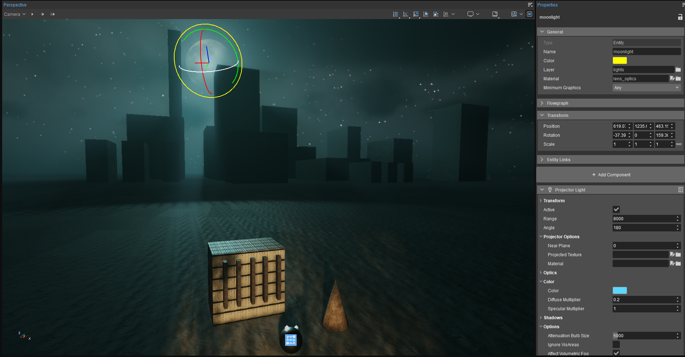